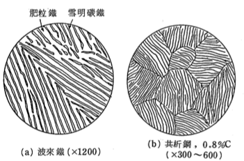

Iron and Steel
鋼錠：全靜鋼、靜面鋼
純鐵：A1, A2, A3變態
這四個區段，由低溫到高溫分別標上\(\alpha\)到\(\gamma\)：
- - ~ 800 ：\(\alpha\)鐵, BCC, 叫做「肥粒帖」
- 800 ~ 910：\(\beta\)鐵, BCC, 沒特別名稱，不過這個溫度較「磁氣變態點」
- 910 ~ 1400：\(\gamma\)鐵, FCC, 叫做「沃斯田鐵」
- 1400 ~ 1536 ：\(\delta\)鐵, BCC, 沒特別名稱
鋼的分類
純鐵(C 少於 0.02)、鋼(0.02 ~ 2.14)、鑄鐵(2.14 ~ 6.67)
鋼鐵另外也有分低碳鋼(0.02 ~ 0.35)、中碳鋼(0.35 ~ 0.6)、高碳鋼(0.6 ~ 2.14)。
還有「軟鋼」(比低碳鋼軟，含碳量比低碳鋼低)、極軟鋼(C 少於 0.01) 等
鐵碳平衡圖

可以立刻發現這張圖上有一個共析反應，在723度，這裡剛好是\(A_{1}\)變態的溫度。這個反應生出來的東西就是共析鋼
首先是Y，這裡是C = 0.8\(\%\)的共析鋼。這個反應是：
冷到723度，行共析反應
$$C = 0.8\% \to \alpha - Fe(C = 0.02\%) + Fe_{3}C(C = 6.67\%)$$ 其中： $$\frac {\alpha鐵}{Fe_{3}C} = \frac {6.67 - 0.6}{0.8 - 0.02} = \frac {5.87}{0.78}$$
可以發現這個反應中，變成一個含鐵量極少的物種 + 一個含鐵量極多的物種。其中\(Fe_{3}C(C = 6.67%)\)又叫作 「雪明碳鐵(Cementite)」。圖大概長這個樣子：
其中黑線是雪明碳鐵，白色區域是\(\alpha\)鐵。另外，這種層狀\(Fe_{3}C\)與波來鐵的混合物又有一種名字， 叫做「波來鐵」(Perlite)。
-
繼續冷卻：理論上要有二次晶的，但是如果用槓桿定律來看，會發現他的含量實在是少到太少了，所以通常忽略他。
再來看X(C = 2.5%)。因為含碳量比共析鋼小，所以就叫「亞共析鋼」(Preeutectoid Steel)。產生的反應是：
冷到\(t_{2}\)溫度： $$\frac {初析 \alpha鐵}{殘留\gamma 鐵} = \frac {t_{2}\gamma_{2}}{t_{2} \alpha_{2}}$$
-
冷到723度，尚未行共析反應： $$\frac {初析 \alpha鐵}{殘留\gamma 鐵} = \frac {t_{3}S}{t_{2}P}$$
-
冷卻到723度，行共析反應： $$\frac {初析 \alpha 鐵}{波來鐵} = \frac {t_{3}S}{t_{3}C} = \frac {0.8 - 0.25}{0.25 - 0.02}$$
然後課本的圖至少有兩個錯誤：肥粒鐵跟波來鐵的比例不對(應該要肥粒鐵比較多)、單一肥粒鐵結晶應該會形成 很多個波來鐵晶粒，而不是原地不動。
最後看Z(c = 1.1%)，也就是過共析鋼(Posteutectoid))
當冷到723度，未產生共析反應之前 $$\frac {初析 Fe_{3}C}{殘留\gamma 鐵} = \frac {6S}{6K}$$
當冷到723度，產生共析反應： $$\frac {初析 Fe_{3}C}{殘留波來鐵} = \frac {6S}{6K} ＝\frac {1.1 - 0.8}{6.67 - 1.1}$$ 可以發現幾乎差了19倍。因為\(Fe_{3}C\)實在是太少了，所以他會變成網狀的。
另外，因為過共析鋼的波來鐵晶粒實在是超大的，所以有的時候雪明碳鐵攜出時不會乖乖在晶界析出，而是 直接在晶粒裡面析出，所以雪明碳帖就會一片一片卡在波來鐵晶粒中，這種組織叫「費德曼組織」。
實際上，可以只看圖就知道亞共析鋼成分，因為波來鐵很黑，肥粒鐵很白。大概的概念像這樣：
至於過共析鋼就無法了，因為斜率實在是太低了。不過含碳量高有一個特徵，就是磨他的時候會噴出火花，因為碳 會因為摩擦的高溫與高熱氧化。不過這就更粗糙了。
最後，我們可以把這些反應的溫度標記到相圖上，像這樣：
另外，你可能會納悶為什麼沒有\(A_{2}\)，其實是有的，\(A_{2}\)是在\(\alpha\)鐵的上邊界那條。 \(A_{cm}\)是指「雪明碳鐵」的意思，因為往下他會產生雪明碳鐵嘛。
有一個小八卦是，其實有\(A_{0}\)變態，在大約215度時，也是磁性會變化的地方。
鋼的熱處理
如果把金屬用不同的速度冷卻，有可能會讓鋼鐵形成不同的組織，鍛刀大賽都有播。
所以就從鍛刀大賽最常看的淬火開始吧～
淬火
淬火就是把熔融的鐵丟到液體裡面，鐵就會急速冷卻。像下面這裡就有很多不同的東西可以丟：
可以注意到他們的溫度都是持續遞減的，這種就叫「連續冷卻」。還有一種很奇耙的冷卻方法，就是冷到一定程度時， 把他溫度垂固定一段時間，然後再繼續讓他冷卻（當然，需要相關設備輔助）。這種冷卻就叫做「恆溫冷卻」。
把鐵丟掉這4種東西裡面時，可以順便畫一下他們的變態過程：
這裡可以先注意一些小細節：
- \(A_{1}\)是共析變態點
- \(A_{c_{1}}\)是加熱時的共析變態點。
- \(A_{r_{1}}\)是冷卻時的共析變態點。
首先看爐冷。爐冷就是放在裡面跟爐子一起變冷，所以想當然他會非常慢，有很充分的時間去結晶，所以晶粒會很粗 ，叫做「Coarse Perlite」。
再來看空冷跟水冷。冷卻速度中等，形成「中波來鐵」。英國人很堅持他們要取特別的名字， 所以他們的「中波來鐵」會叫「糙班鐵」;
然後看很暴力的水冷，因為水的熱傳速度很快，所以鐵會超快速的被冷卻，根本沒有時間慢慢長， 溫度就離開共析點了，所以這時候就不會有波來鐵，而是形成一種性質不同的物質，就叫「麻田散鐵」 。還會有一些可憐來不及變態的沃斯田鐵(R.A., Risidual Austenite)留下來。 那個\(M_{s}\)溫度是指「麻田散鐵變態開始產生時的溫度」。
最後看油冷。油冷速度很快，所以可以猜她會有一點麻田散鐵。但是他沒有油冷那麼快，所以還是可以產生一些波來鐵， 不過因為很快，所以也沒辦法長太大。確實，他的顯微結構是一些「細波來鐵」，加上少量的麻田散鐵， 及一些殘留的沃斯田鐵。另外，英國人的堅持，細波來鐵他們會叫「吐粒散鐵」。
一件要注意的小細節是：殘留沃斯田鐵並不是穩定的東西，而且密度比常溫下的其他形態的鋼都還要高。如果在常溫時， 他變成了其他比較穩定的型態，那麼精密度就可能會受到影響。所以在這種用途，需要多做一些事來消除殘留的沃斯田鐵。
這張圖還可以在注意一些事：Ar會隨著「溫度下降速度不同」，而下降。溫度下降越快 ，Ar就越低。當冷卻速度快到一定程度時，麻田散鐵變態開始出現;在持續變快時， 波來鐵變態完全消失，只剩下麻田散鐵變態。(課本沒有的那張圖)。
所以總結一下火的過程，不同的冷速會有不同的產物，而且變態發生的溫度也會不同，所以就可以把不同冷速下，開始變態的點 畫出來，得到以下的圖：
這張圖還可以在注意一些事：Ar會隨著「溫度下降速度不同」，而下降。溫度下降越快 ，Ar就越低。當冷卻速度快到一定程度時，麻田散鐵變態開始出現;在持續變快時， 波來鐵變態完全消失，只剩下麻田散鐵變態。(課本沒有的那張圖)。
如果是用在連續冷卻的話，這樣就夠用了。不過髓著科技進步，我們可以讓鋼「保持恆溫」，然後逐個溫度量測變態點， 得到下面的圖：
鼻部以上的邏輯跟連續冷卻一樣的，而鼻部以下呢？ 一個叫Bain的人也想到一樣的問題。照理說，這樣的東西跟油冷得到的東西類似，也就是 波來鐵跟麻田散鐵的混合物。不過，他發現這裡面沒有波來鐵，取而代之的是另外一種組 成與波來鐵一樣，但是構造不一樣的物質，這個東西 就用他的名字命名，叫Benite「變韌鐵」
雖然變韌鐵成分跟波來鐵一樣，但微觀構造跟波來鐵不太一樣。波來鐵的結構是層狀，但是變韌鐵是葉狀分部，葉狀分佈中含有板狀(上變韌)或針狀(下變韌)的雪明碳鐵，而這個雪明碳鐵，其實是過飽和的，因此含碳量會比0.02多，也因此比波來鐵還要硬。如果把它跟其他剛剛得到的鋼比較：
變韌鐵的一般性質還不錯，韌性比麻田散鐵好，硬度又比波來鐵好，而且逼近麻田散鐵。 但是問題是，如果要做出來他，降溫曲線就要避開 鼻部地區，也就是要先急冷，冷到一定溫度之後，突然保持恆溫，直到變態完成為止。但這是一件很困難的事，而且通常工業 都要一次處理很大塊的金屬，所以即使外部可以達成這種目標，內部降溫也不會那麼快，所以還是很難避開。而且這是log scaled之後的曲線，也就是說要恆溫很久，才可以做出變韌鐵，整個很不合成本。還不如用麻田散鐵，瞬間下去就生出來了。
另外值注意的是，波來鐵是隨時間慢慢生出來的，但是麻田散鐵是瞬間生出來的。 所以下面麻田散鐵的變態，根本是一條平的，表示溫度到了之後， 麻田散鐵就瞬間完成變化了。用再久也一樣，不會再多了。
所以要增加麻田散鐵的比例亦怎麼做？既然用比較久也沒比較多，那就 沒錯，就是把最終溫度降得很低很低，麻田散鐵比例就會變多了。如下圖：
因為變韌鐵很難做，但是麻田散鐵可以做很快，這樣聽起來好像麻田散鐵比較好。但是麻田散鐵很脆，所以要想個辦法 讓他韌性變好一點。該怎麼做呢？
答案是：回火。